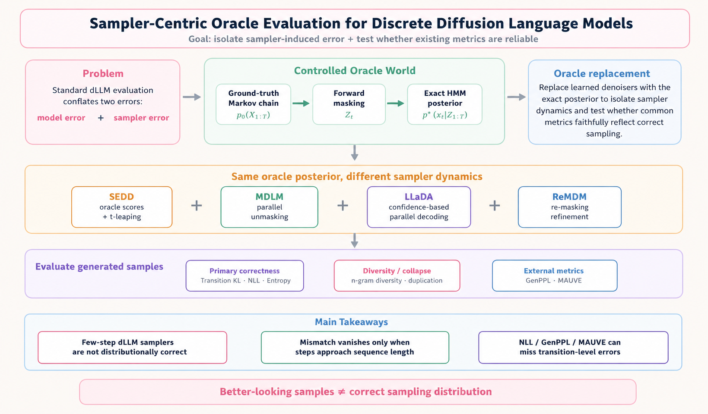
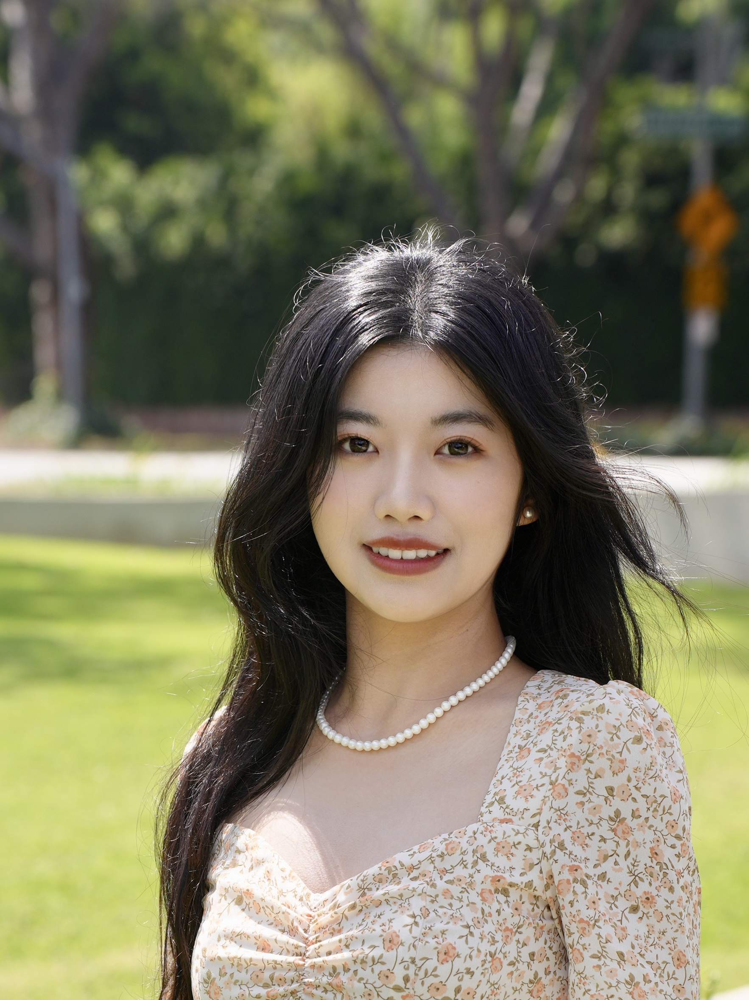
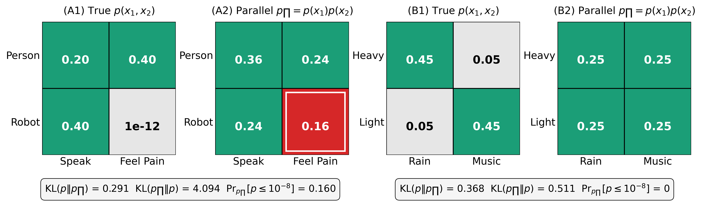

Luhan Tang
My research focuses on diffusion models and large language models. I actively explore both theoretical foundations and empirical behavior in generative modeling, with specific research interests in:
- Diffusion models: diffusion models for images and diffusion language models.
- Large language models: multimodal systems and agentic models for complex tasks.

I am a Ph.D. student at the University of California, Riverside, working with fantastic professors Greg Ver Steeg and Weixin Yao.
I received my B.S. degree in Statistics from Beijing Normal University, with minor coursework in Economics at Peking University.
Beyond research, I also enjoy photography and keeping a personal visual archive of places, light, and quiet everyday moments. Welcome to my photo gallery 📷
News
Apr '26
One paper accepted by ICML 2026!
Selected Publications and Preprints
Filter by: show selected / show all by date / show Diffusion Language Models

Diffusion language model
Generation Order and Parallel Decoding in Masked Diffusion Models: An Information-Theoretic Perspective
Preprint, 2026
Teaching
Teaching Assistant, University of California, Riverside
- STAT010 Introduction to Statistics - Spring, Summer, Fall 2025; Spring 2026
- STAT008 Statistics for Business - Winter 2026